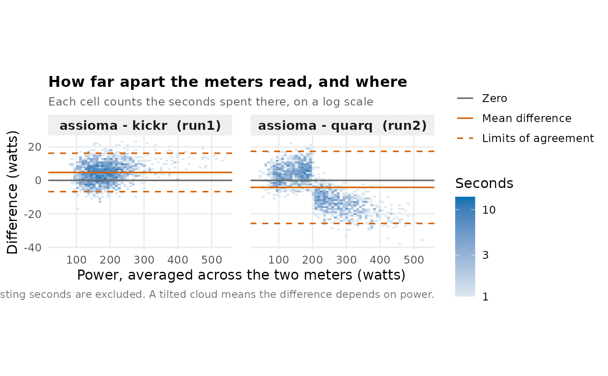

Bland-Altman plot of the difference between two meters
Source:R/comparison_charts.r
plot_agreement.RdEach second contributes a point: how far apart the two meters read, against the power they were reading. Plotting against the mean of the pair rather than against either one avoids the artefact where a meter's own noise pulls the cloud into a slope that looks like a real trend.
Arguments
- aligned
Result of
align_rides().- min_power
Both sources must exceed this to count, in watts.
Details
The dashed lines are the limits of agreement, between which most seconds fall. A cloud that tilts is a meter whose error changes with power.
Seconds are binned into a two-dimensional histogram rather than drawn as points. An hour carries 3,600 of them, and at that density overlapping translucent points are a smear whose darkest region is wherever the ride happened to spend its time — which is the one thing the plot is not asking about. The count scale is logarithmic, so a band holding ten seconds is still visible beside one holding three hundred.
The panel is drawn at a fixed aspect ratio. A Bland-Altman plot's job is to let you see a tilt, and letting the height float free of the width flattens the apparent slope by an amount that depends on the reader's window.
See also
Other plots:
plot_by_level(),
plot_chain(),
plot_timeseries()
Examples
read_rides(demo_rides()) |> align_rides() |> plot_agreement()
